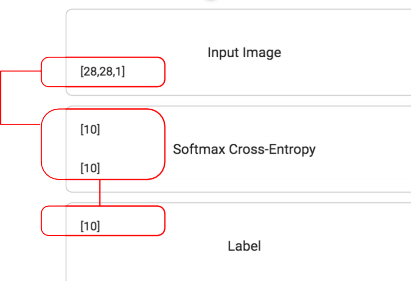
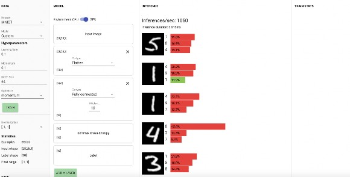
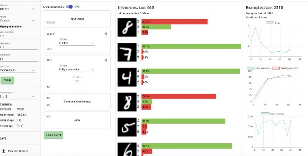
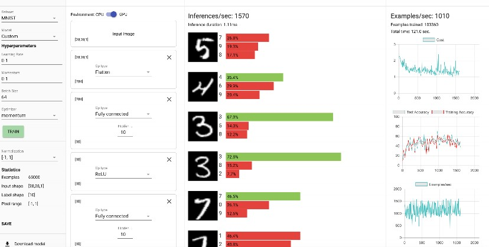
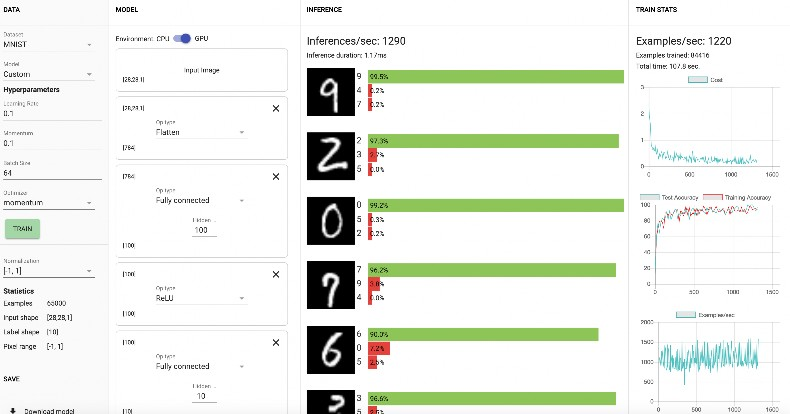

ASSIGNMENT 2
Problem 1

x
The layer is invalid due to continuity of the network. We need to add intermediate layers that convert the parameters to the corresponding format.

It performs badly because of two reasons. The first one -more obvious- is because of the random weights applied to the operation. The second is due to the small amount of units in the FC layer.
Problem 2

On MINST, It performs better since the network has been trained and the inferences raised from 1050 / sec to approximately 1600/sec with 1460 examples/ second/.
By applying multiple linearly activated layers to our NN makes it worst because no matter how many layers or neurons to our network the result will be always a linear function. Each layer would get the weighted values from the previous linear function and will calculate a weighted sum on that input - it will fire every time on another linear activation function.

The model starts really bad at the beginning, slowly increasing the accuracy over time. The results are as low as 37% avg. I wonder if this is produced because of the RELU activating only too little amount of neurons.

The model performs better with accuracies over 98 % (2 minutes training) Introducing RELU and adding more units to the first FC layer makes a difference in terms of speed and ''lightness' of the network because of its outputs producing -I guess- a sparse activation of the neurons (if some are 0 then they don't activate). Therefore is less computationally expensive due to the use of a simpler mathematical operations.